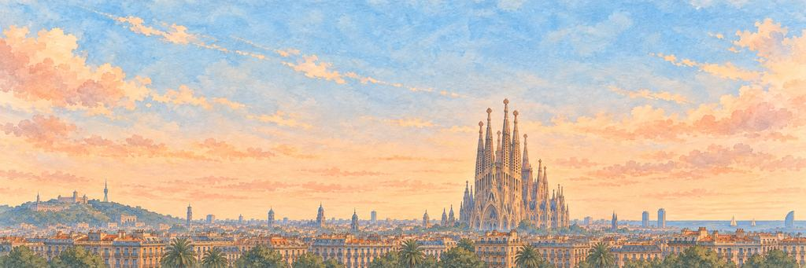

Barcelona paper plane game
Fly over Gaudí's city, from Park Güell down to the sea.
Long flat blocks, then the avenue. Get past the Gegant, then the salamander.
A Roman town by the sea
Barcelona began as Barcino, a small walled Roman town, more than 2,000 years ago. In 1859 the engineer Ildefons Cerdà planned the Eixample, a grid of blocks with their corners cut off so light and air could reach the streets. For the 1992 Olympic Games the city rebuilt its seafront and opened new beaches.
“I'd count the cut corners from the sky.”
The landmarkThe Sagrada Família
Antoni Gaudí took charge of the Sagrada Família in 1883 and worked on it for the rest of his life, more than forty years. He knew he would not see it finished. It is still being built, paid for by visitors' tickets, and in 2026 its tallest tower reached 172.5 metres.
Neighbourhoods
Barcelona is split into 10 districts. The oldest part is the Gothic Quarter, where narrow streets surround the cathedral of Saint Eulalia, begun in 1298. Gràcia, in the north, was a town of its own until Barcelona took it in, in 1897. By the sea, Barceloneta was laid out from 1753 as a grid of narrow blocks for families who had lost their homes when the Ciutadella fortress was built.
The coast
Barcelona sits on a plain between two rivers, the Llobregat and the Besòs. Its city beaches run for about 4.5 km. The port is one of the busiest for cruise ships in Europe, with about 3.66 million cruise passengers in 2024. At the foot of La Rambla, by the old harbour, stands the Columbus Monument. It was built for the Universal Exhibition of 1888 and is about 60 metres tall.
The skyline
Behind the city, Tibidabo rises to more than 500 metres, the highest point of the Collserola hills. On the other side, the hill of Montjuïc is topped by a castle above the harbour. On the seafront stand the twin towers of the Hotel Arts and Torre Mapfre, each 154 metres tall and finished in 1992. Torre Glòries, designed by Jean Nouvel, opened in 2005. At night thousands of LED lights colour it.
When to see it
Go up to the Bunkers del Carmel in the late afternoon. This old anti-aircraft battery from the Spanish Civil War looks out over the whole city to the sea. After dark, visit the Magic Fountain of Montjuïc, built for the 1929 International Exhibition, for its show of water, light and music.
Who keeps the wish in Barcelona.
An Elite wakes first; the Boss guards the wish itself. Hit their weak points for a BONK!, land the last blow for a KO!, and each one grins and takes a bow.
-
The Elite


The Gegant Queen
Dances three metres up · Keeper of the festival parades
Gegants are giant festival figures, three to four metres tall, each carried by one person hidden under the skirts. They dance through Barcelona's streets at the Mercè festival every September, spinning so their robes fly out. The city has paraded giants for more than 500 years.
The Gegant spins once, her skirts swirling out, and dips her crown to the plane. The Gegant wobbles, sets her crown straight and keeps dancing. The Gegant curtsies low. Down in the street, a drum gives one last beat.
“I'd ask how she sees where she's going.”
-
The Boss

The Mosaic Salamander
Wears every colour at once · Keeper of Park Güell
A mosaic salamander lies on the main stairs of Park Güell, which Antoni Gaudí built between 1900 and 1914. It is covered in trencadís, pieces of glazed tile set into bright patterns. Barcelonans often call it el drac, the dragon, and it may be the most photographed animal in the city.
The salamander lifts its head from the warm steps, flicks its tongue and grins at the plane. The salamander hisses, and its tiles flash in the sun. The salamander curls its tail, bows its crowned head and goes back to sunbathing.
“I'd sit next to it on the warm steps.”
Barcelona cleared. I flew from the mosaic hill right down to the sea.
- The Gegant never stopped dancing, even when I hit her. The drums kept going too.
- The salamander didn't mind me. It just wanted its sunny step back.
The plane reaches Barcelona from Rome.